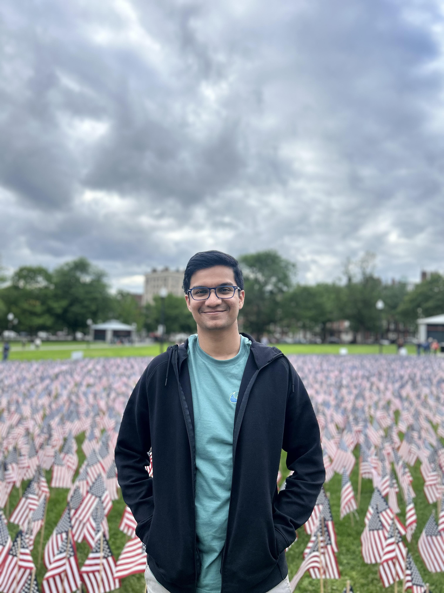

PhD Student → Mobile, Pervasive & Sensor Computing Lab
Email: gshinde1@umbc.edu
I am a PhD researcher at the MPSC Lab under Nirmalya Roy and Anuradha Ravi. My research interests lie in distributed task execution and decision‐making for autonomous agents in contested environments. Previously, I worked as a Research Assistant at MiCoSys Lab with Saptarshi Sengupta, where I developed deep learning techniques to predict the remaining useful life of Li-ion batteries.